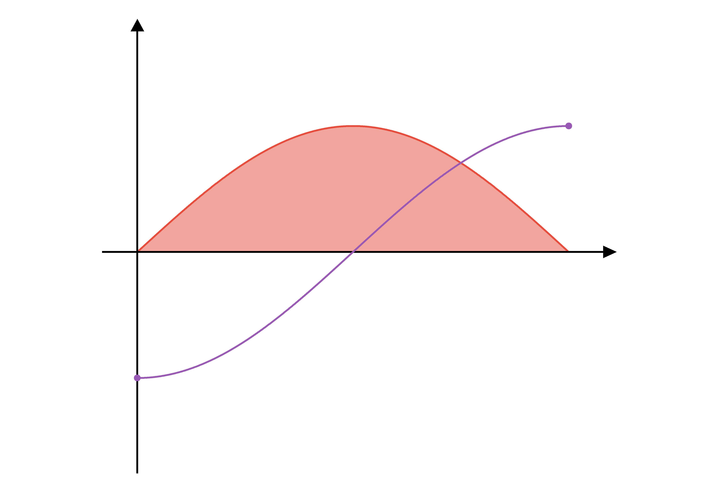
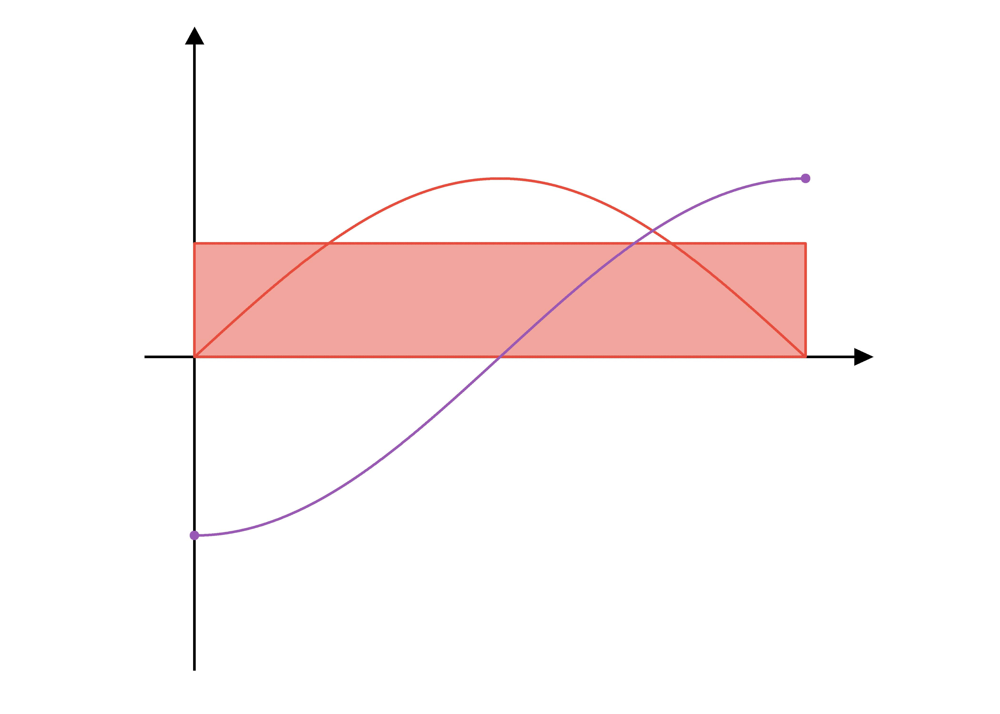
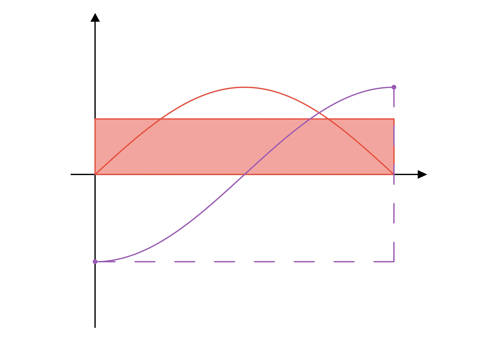

What does area have to do with gradient?
The first fundamental theorem of calculus makes an interesting claim about the relationship between the area under a curve, and the anti-derivative of that curve's corresponding function. This is a relationship that is easy to take for granted. Often students are simply taught how to find an anti-derivative, and then told the fact that the difference between the value of that anti-derivative at two points gives the signed area under the initial curve. This is expressed as:
\[\int_{a}^{b} f(x) dx = F(b) - F(a)\]
I want to explore why this is true on an intuitive level, as opposed to presenting a rigorous proof that new calculus students would learn to regurgitate. To begin, let's consider the area under the function \(\sin(x)\) on the interval \([0, \pi]\). On the plot below I have also included the anti-derivative of \(\sin(x)\) being \(-\cos(x)\). Our goal here is to understand why the area shaded in red, \(\int_{0}^{\pi} \sin(x)\), is equal to the difference in height between the two red points, \(-\cos(\pi) - -\cos(0) = 2\)
There are a few ways we can approach trying to find the area. One such approach is to work backwards from the average value of the function. Consider a transformation of our shaded area into a rectangle where the width is the same, but the height is equal to the average value of the function.
The width of this rectangle is known, but then to calculate the area we'd need to know the average value of \(\sin(x)\) across that interval. To figure this out, let's use the known relationship to the anti-derivative, since we know that's ultimately where we need to end up. Since \(\sin(x)\) is the gradient function of \(-\cos(x)\), the average value of \(\sin(x)\) is equal to the average gradient of \(-\cos(x)\). That average gradient across the interval is equal to the gradient of the secant across that domain, which is the difference in \(y\) divided by the difference in \(x\) of our red endpoints.
When we multiply this average value by the width of the interval to get the area, we are simply left with the difference in \(y\) of our two endpoints, which is the anti-derivative evaluated at the endpoints.